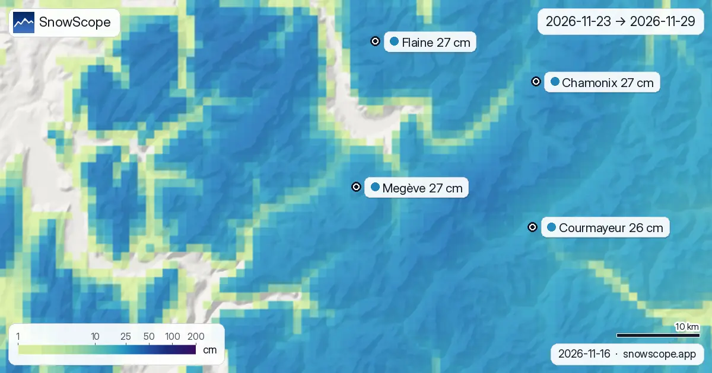

Galtür in December: the quiet Paznaun option with a low-season price
Galtür sits at the quiet end of the Paznaun valley, with its lowest lift at 1628 m. On a typical 15 December our 46 winters of snow history give 55 cm at mid-mountain, and in the low season (until 18 December) the official day pass costs EUR 55.50.
See the live snow forecast for Galtür in the SnowScope appSnow depth, powder alerts and the 3D map, free.What people assume about December here
Many skiers see Galtür as the small, sleepy neighbour in the valley, nice for families, not for serious snow. The numbers say the opposite for December: the base is as high as Obertauern's, and the snow is a little deeper. In the week of 15-21 December, 93 % of our winters had 30 cm or more at mid-mountain (1961 m) and 98 % at the top (2295 m).


What 46 winters actually show
A typical 15 December has 40 cm at the base, 55 cm at mid-mountain and 73 cm at the top. By Christmas week mid-mountain had 30 cm in 96 % of winters and 60 cm or more in 67 %. In none of our winters was the base bare on 15 December.
Early December is the weak spot at the base: the usual first day with 30 cm there is 28 November, and only 54 % of winters had that much in 1-7 December. The trend is mild: at mid-mountain the December average went from 55 cm in the first 15 winters to 50 cm in the last 15.
The cheap part
Galtür's season starts on 4 December 2026 on the official list. The low season runs until 18 December, with an adult day pass at EUR 55.50 and a 6-day pass at EUR 258. From 19 December the prices are EUR 58.50 and EUR 286.50.
Those are among the lowest prices for a high-altitude Tyrolean resort in this series, and the snow is no worse for it.
Where Obertauern fits
Obertauern in Salzburg is the obvious comparison: the same 1628 m base, a bigger area (87 km of mapped runs against 27 km), and a little less December snow, with 43 cm at mid-mountain on a typical 15 December and 80 % of winters with 30 cm in the week of 15-21 December. Its pre-Christmas 6-day pass costs EUR 331, more than Galtür's EUR 258.
Pick Obertauern for size and ski-in, ski-out village life. Pick Galtür for a quieter, cheaper week with slightly better December odds.
Small print
Galtür is small: 9 lifts and 27 km of mapped runs. Good skiers will know it after two days and may want a day elsewhere in the valley. The road at the end of a long valley can close for avalanche risk after big storms, so build a buffer day into your plans.
Tips for skiers
- Book a week between 4 and 18 December for the low-season price (EUR 258 for 6 days).
- Choose the second week of December or later: the base reaches 30 cm on average only near the end of November.
- Keep a buffer day: the Paznaun road can close after heavy snowfall.
- Read the Tyrol avalanche report (avalanche.report) every morning before leaving the piste.
More maps (external sites)
References and credits
- Galtür: official lift-pass prices (2026-27), checked 13 November 2026 www.galtuer.com/en/winter/operating-times-prices/skipass-prices-silvapark
- Obertauern: official lift-pass prices (2026-27), checked 13 November 2026 www.ski-obertauern.at/en/ski-pass/ski-pass-prices
About these numbers
Snow numbers: SnowScope snow history, 46 past winters (1980-81 to 2025-26) at the resort's heights, corrected for height (an estimate for an area, not resort reports); 'good snow' = 30 cm or more on the ground as the week's average. Map: our typical depth on 15 December spread over the terrain by height. Runs and lifts: OpenSkiMap mapping. Lift-pass prices: the resorts' official price lists, checked on 13 November 2026; prices can change.
Official avalanche bulletins: Lawinenwarndienst Vorarlberg
Cite this report
For research, teaching or the press: the numbers and charts are free to reuse under CC BY 4.0 with this citation.
SnowScope (2026), Galtür in December: the quiet Paznaun option with a low-season price, https://snowscope.app/blog/en/2026/11/galtuer-december-skiing-quiet-paznaun-budget.html, accessed 2026-11-14
SnowScope (Atlas Labs). (2026, November 14). Galtür in December: the quiet Paznaun option with a low-season price. SnowScope snow reports. https://snowscope.app/blog/en/2026/11/galtuer-december-skiing-quiet-paznaun-budget.html
BibTeX
@misc{snowscope2026galtuerdecemberskiingqui,
author = {{SnowScope (Atlas Labs)}},
title = {Galtür in December: the quiet Paznaun option with a low-season price},
year = {2026},
month = nov,
howpublished = {\url{https://snowscope.app/blog/en/2026/11/galtuer-december-skiing-quiet-paznaun-budget.html}},
note = {Published 2026-11-14 13:29 UTC; accessed 2026-11-14}
}· CC BY 4.0 · Methods, data and tools →
Galtür: snow and temperature by height, this winter vs last (tools) →
Follow Galtür
Free: a message when fresh snow is coming, and the forecast every morning.
More snow reports

Méribel snow forecast for 23–29 November 2026: 28 cm at the top (13–44 cm), 19 cm at the base, snowiest day Wednesday 25 November, with neighbours compared.

Next week's fresh snow in Megève: 9–46 cm on the upper slopes and 1–2 cm at the base (23–29 November 2026), best day, best slopes and how sure the forecast is.

Mayrhofen snow forecast for 23–29 November 2026: 17 cm at the top (2–31 cm), 1 cm at the base, snowiest day Sunday 29 November, with neighbours compared.